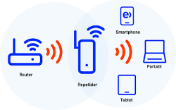

Repetidor
Dispositivo de red que amplifica y retransmite señales de redes inalámbricas (Wi-Fi), extendiendo el alcance y mejorando la cobertura en áreas donde la señal original es débil o no llega. Funciona recibiendo la señal Wi-Fi existente y transmitiéndola nuevamente, permitiendo a los dispositivos conectarse a la red inalámbrica a mayor distancia del enrutador principal.
